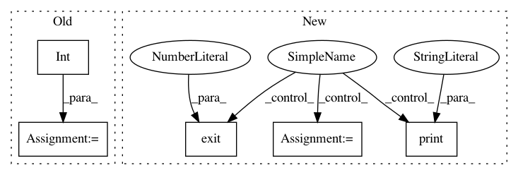

4a432c5225262f26517776aa865c4c8428d808ad,pynets/plotting/plot_graphs.py,,plot_conn_mat,#Any#Any#Any#Any#Any#Any#,17
Before Change
print("Connectivity matrix too sparse for plotting...")
if len(labels) > 150:
tick_interval = int(np.around(len(labels)/50))
else:
tick_interval = int(np.around(len(labels)))
plt.axes().yaxis.set_major_locator(mticker.MultipleLocator(tick_interval))
plt.axes().xaxis.set_major_locator(mticker.MultipleLocator(tick_interval))
After Change
try:
labeling_atlas = hardcoded_params["plotting"]["labeling_atlas"][0]
except KeyError:
print(
"ERROR: Plotting configuration not successfully extracted from"
" runconfig.yaml"
)
sys.exit(0)
stream.close()
labels = [i[0][labeling_atlas] for i in labels]
In pattern: SUPERPATTERN
Frequency: 3
Non-data size: 5
Instances
Project Name: dPys/PyNets
Commit Name: 4a432c5225262f26517776aa865c4c8428d808ad
Time: 2020-07-22
Author: dpisner@utexas.edu
File Name: pynets/plotting/plot_graphs.py
Class Name:
Method Name: plot_conn_mat
Project Name: dPys/PyNets
Commit Name: 4a432c5225262f26517776aa865c4c8428d808ad
Time: 2020-07-22
Author: dpisner@utexas.edu
File Name: pynets/plotting/plot_graphs.py
Class Name:
Method Name: plot_community_conn_mat
Project Name: calico/basenji
Commit Name: 98b1fe8f5c1acccb31c10028bccaa797470279d2
Time: 2019-08-23
Author: drk@calicolabs.com
File Name: bin/basenji_map.py
Class Name:
Method Name: main